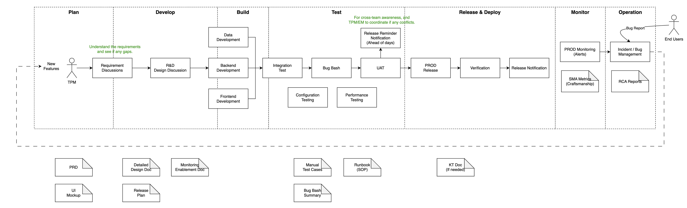

Engineering Manager "Cheat Sheet"
An engineering manager directs, plans, and coordinates activities while supervising a team of engineers. It’s juggling people management, project management, and technical knowledge to deliver the right product, the right way. Some responsibilities:
- Analyze, propose and manage budgets, technologies and resources for projects.
- Plan strategies for the development of designs and products on schedule and on budget.
- Communicate and collaborate with other managers, stakeholders and contractors.
- Prioritize, delegate and supervise all engineers’ activities and deliverables.
- Manage, support, and evaluate engineers’ performance.
- Hire new talent for the team and offer coaching and development opportunities.
- Provide input in strategic technical decisions and solutions, when needed.
- Build the entire technical documentation and project roadmaps.
Target of the day-to-day management: communicating with other human beings, catering to stakeholders’ needs and engineering goals, managing the team for performance. Potential daily work inlcudes:
- Daily standups: get an accurate view of the team’s output, strengthen team communication and support engineers to do their tasks without any friction.
- Unblocking the team:
- help team member succeed at their tasks by pairing engineers stuck with a technical issue, collaborating with a product manager on requirement issues, etc.
- Also, we need to plan the workload for everyone at this time.
- Meetings with managers and stakeholders:
- Work closely with product departments or other team leads to set project roadmaps and priorities and shape strategies and technical directions.
- Keep everyone in the loop about the work going forward, especially upper management who needs to make informed decisions regarding the business and the team.
- Brainstorm solutions for potential roadblocks or new features.
- Advocate for my hard-working engineers and ensure their access to well-deserved career advancement opportunities.
- Gather resources and information from clients and stakeholders to improve processes and project development.
- Collaborate closely with upper management and leadership to ensure the wellbeing of my department and the alignment with the company culture and goals.
- One-on-ones: cultivate trust and a culture of feedback that works for engineers. This allow us not only to talk about current work and coach engineers through the challenges, but to find opportunities to grow and cultivate their talent as they deserve.
- Project management: take the time to plan sprints, to analyze, discuss and negotiate resources and requirements with customers, to support the team in meeting project milestones.
- Administrative stuff: documentation, reports, check-ups, learning and other admin tasks.
- Responding to emails and threads in my communication channels,
- Reading up on best practices and preparing technical documentation,
- Documenting and improving processes at work, reviewing customer feedback,
- Strategizing and brainstorming opportunities for career development, mentoring and training for my people,
- Finding ways to improve collaboration and communication for a strong team culture,
- Preparing reports and writing performance reviews,
- use and track performance metrics.
- A bit of coding (maybe).
- Recruiting: hiring the right people is key to supporting the well-being and productivity of the team.
Other Materials
Strategic Goals
Align with parent business unit and company, then design and segment the aim based on the location the team resides in the whole business flow.
SDLC Workflows (General)

Key Points of Recruiting
- Understand the requirements of the position designed by the company.
- (optional) Interview the candidate based on the template (technical, behavioral, etc) we have.
- Have a deep-dive session with the candidate based on the resume they provided - more focusing.
- Basic expertise.
- Communication (understandable of the questions?).
- Talking atmosphere (feel relaxed and cozy?)
- How they behaved in their past experience? Like collaboration, ability of problem-solving, etc.